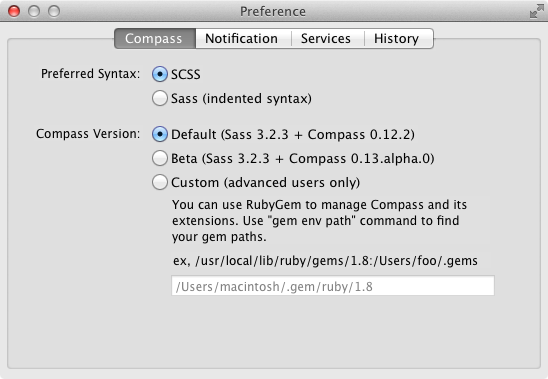
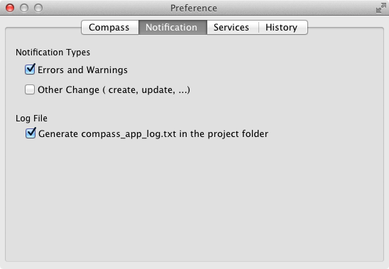
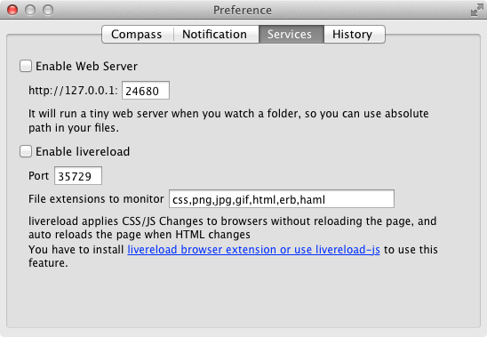
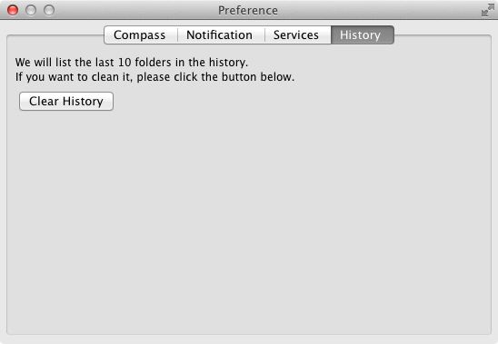

Preference
There are some settings in the prefrences.
Compass

Preferred Syntax:
Sass has two syntax choices: SCSS (.scss) and indented syntax (.sass). Fire.app supports both, but you must choose which one you want for generating files from templates.Compass Version:
Fire.app always uses the latest stable release of Compass by default. If you want to use other Sass/Compass versions, or use RubyGems to manage Compass extensions manually, please use the "Custom" option.
WARNING: This is for advanced users only.
Notification

Fire.app supports Growl. You can decide which types of notifications you want. Compass.app can also generate a log file for debugging purposes.
Services

Enable Web Server:
If you have enabled this option, Compass.app will start a tiny web server (WEBrick) from your project path. You can instantly check your design by opening http://localhost:24681 in your browser. You can also modify the default port.
Enable LiveReload:
Fire.app has built-in LiveReload support, so you can stop refreshing your browser manually. Browser extensions must be installed to make this work. If you have enabled both web server and livereload, you can even use the LiveReload-js feature. (Our thanks to @livereload for the MIT License.) We also recommend LiveReload 2.
- Browser extensions from LiveReload
- Older version:
If you do not want to install browser extensions, you can use LiveReload-js by pasting this code into your HTML:
<script>document.write('<script src="http://'
+ (location.host || 'localhost').split(':')[0]
+ ':35729/livereload.js?snipver=1"></'
+ 'script>')</script>
Then LiveReload will work automatically.
If you are using ERB files, you can simply use this helper to generate LiveReload-js:
<%= livereload_js %>
If you use the helper but don't want to generate LiveReload-js in the output static files, you can use:
<%= livereload_js if ENV["RACK_ENV"] != "production" %>
History

Click the "Clear History" button to destroy the history list.